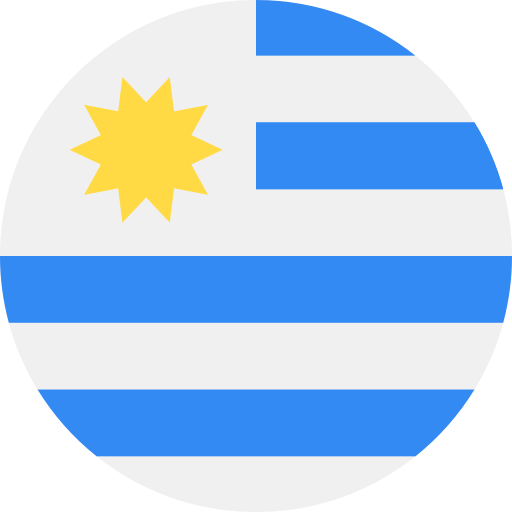

JUDE BELLINGHAM
Edad: 20 años
Posicion: Centrocampista
Numero: 5
Estatura: 1.86 m
Peso: 75 kg
Fech. Nac.: 29/06/2003
Información:
Jude Victor William Bellingham es un futbolista británico que juega de centrocampista en el Real Madrid C. F. de la Primera División de España.


FEDERICO VALVERDE
Edad: 25 años
Posicion: Centrocampista
Numero: 15
Estatura: 1.82 m
Peso: 78 kg
Fech. Nac.: 22/07/1998
Información:
Federico Santiago Valverde Dipetta, conocido deportivamente como Fede Valverde, es un futbolista uruguayo nacionalizado español en 2020 que juega como centrocampista en el Real Madrid C. F. de la Primera División de España.

LUKA MODRIC
Edad: 38 años
Posicion: Centrocampista
Numero: 10
Estatura: 1.72 m
Peso: 66 kg
Fech. Nac.: 09/10/1985
Información:
Luka Modrić es un futbolista croata que desde 2012 juega como centrocampista en el Real Madrid C. F. de la Primera División de España. Fue ganador del Balón de Oro y obtuvo el Premio The Best al mejor jugador del mundo según la FIFA en 2018.